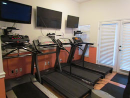

Weights

Our Facility includes a weight training area with several weight options.
Build lean muscle with weights and improve your core with weight training
Dumbbells
Kettle bells
Barbells
Cardio

Burn fat through cardio workouts. If you need to lose 20lbs or more, include at least 30 minutes of cardio each day. We have several
equipment choices for your workout.
- Treadmills
- Elliptical Machines
- Exercise Bikes
Common Exercise
The following are common exercises that we encourage our cliennts to do as part of their daily exercise routine.
Burpee
Burpees are a great, full body exercise to increase your strenght and endurance. Begin in a standing position, drop into a squat and extend your hands forward. kick your feet back and then forward again quickly and then jump
up from a squatted position
Plank
Planks build your core strength. To perform a plank, get in a push up poistion and rest your forearms on the floor. Hold the position as long as you can
Mountain Climber
Mountain climbers are a good cardio exercise. Place your hands on the floor in a push up position, then bring one knee up to your chest and then switch as quickly as you can (as though you are climbing a mountain).
For more information about how to stay active, visit
fitness.gov